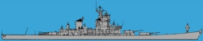
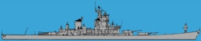

I (Michael) tried to search the net for useable pictures for the game, and found
that most naval images were photos taken at odd angles... So we were put in contact
with the Swedish FMW (The Swedish Defence Material Administration) for some realistic naval images. The FMW was very helpful, but
the photocopies we received were not the most fantastic I've seen. So we began the
long process of scanning in the photocopies and touching up the images at high resolution
(3000x3000 pixel resolution) - so that we could scale them down with little loss in
quality. To do this, we used Adobe Photoshop 3.0.5. Finally I reduced the size so
that one hex square on the map would represent 60 meters in length and saved them as
GIF89a images so that we could use them in the Java code that Rasmus has been
working on. Later Rasmus, did some fine-tuning with pbmtools on the transparency and achieved the
desired look.
Here is an example of a before and after shot of our ship images showing how much photo
refinishing needed to be done:
 

Title buttons
The main buttons on the title page were produced with Photoshop 3.0.5 for the
text, Kai's Power Tools 3.0 for the texture in the button, and SGI's render factory
to produce a beveled look on the buttons.
Header Logos
The header logos (i.e. Naval Warfare logo and the various MUMS Project Info, etc.
logos) were produced with Xaos Tool's ntitle 2.2 for the SGI. Similar to the Ship Images
the logos were produced at a high resolution (1500x1200) and then scaled down
for the web page. All beveling, shadowing, and internal graphics on the logos were
done solely in ntitle 2.2.
The Grid
The NW battle grid was designed by Rasmus Kaj. He thought that it would make
the game much more fun if we played it on a hexagonal grid instead of the conventional
square grid versions of Battleship. In the beginning, this fact made matrix calculations
(for depth and placement) a little bit more complex. But of course, that did not stop
Rasmus from hacking it into place.
Important Links